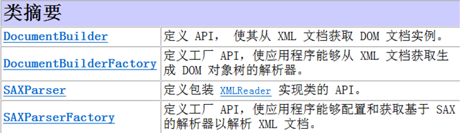
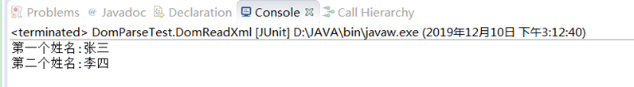
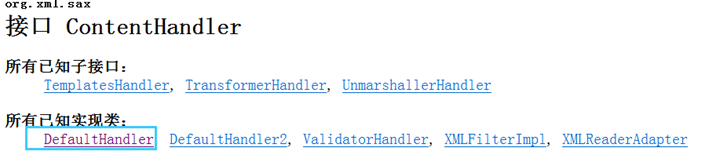
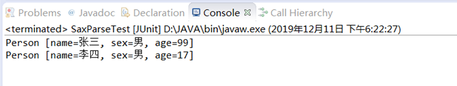

在JAVA中,解析有三种方式:
1.支持Dom与Sax解析的开发包
分为两种.
jaxp是java api中自带的一个包，而dom4j需要我们加入jar文件才能使用
2.JAXP使用
JAXP（Java API for XMLProcessing）主要由下面几个包组成:

3.使用JAXP进行DOM解析
会将XML文档全部内容都读入内存中，并且将文档里的每个数据都创建为一个个对象,所以方便增删改.并且遍历简单。
DOM的缺点主要表现在：效率低，解析速度慢，内存占用量过高，对于大文件来说几乎不可能使用。
3.1 persons.xml示例如下:
<?xml version="1.0" encoding="UTF-8"?>
<persons>
<person>
<姓名>张三</姓名>
<性别>男</性别>
<年龄>22</年龄>
</person>
<person>
<姓名>李四</姓名>
<性别>男</性别>
<年龄>17</年龄>
</person>
</persons>3.2 DOM读取xml步骤
1.通过DocumentBuilderFactory.newInstance()静态方法得到创建 DOM 解析器的工厂对象(DocumentBuilderFactory)
2.通过工厂对象的newDocumentBuilder()方法得到 DocumentBuilder解析器对象
3.然后通过DocumentBuilder解析器对象的parse(filename)方法来得到解析xml文档的Document对象
4.通过Document对象的成员方法来获取XML文档的元素信息，比如getElementsByTagName("person")方法来获取xml文件中的person元素(返回的类为NodeList,保存person所有的集合,比如list.item(0). getTextContent()打印第一个元素的内容)
具体实现方法如下:
@Test
public void DomReadXml() throws Exception{
//获取工厂实例
DocumentBuilderFactory documentBuilderFactory = DocumentBuilderFactory.newInstance();
//创建builder
DocumentBuilder documentBuilder = documentBuilderFactory.newDocumentBuilder();
//解析xml
Document document = documentBuilder.parse("src//persons.xml");
//读出元素内容
System.out.println("第一个姓名:"+document.getElementsByTagName("姓名").item(0).getTextContent());
//读出元素内容
System.out.println("第二个姓名:"+document.getElementsByTagName("姓名").item(1).getTextContent());
}打印:

3.3 DOM修改xml步骤
1.先将xml信息读取到Document对象中
2.然后通过getElementsByTagName("person")方法来获取xml文件中的person元素(返回的类为NodeList),然后通过NodeList.item(i).setTextContent("text")来修改节点内容
3.修改完成后通过Transformer类的transform(Source , Result )方法来将改过的Document对象写入XML文件
具体实现方法如下:
@Test
public void DomWriteXml() throws Exception{
DocumentBuilder documentBuilder = DocumentBuilderFactory.newInstance().newDocumentBuilder();
//1.先将xml信息读取到Document对象中
Document document = documentBuilder.parse("src//persons.xml");
//2.修改第一个节点内容为99
document.getElementsByTagName("年龄").item(0).setTextContent("99");
//3.通过transform(Source , Result )方法来将改过的Document对象写入XML文件
Transformer transformer = TransformerFactory.newInstance().newTransformer();
Source xmlSource = new DOMSource(document);
Result outputTarget = new StreamResult("src//persons.xml");
transformer.transform(xmlSource, outputTarget);
}
4.使用JAXP进行SAX解析
sax解析的优点是边读边解析,占用内存少，解析速度快，缺点是不能对XML文件改删,并且不支持向后遍历,只能从头到尾读取.
4.1 SAX读取XML步骤
1.获取SAXParser对象,该对象通过SAXParserFactory构造
2.通过SAXParser.getXMLReader()获取XMLReder对象
3.实现一个ContentHandler的子类(PersonHandler),其实就是构造一个DefaultHandler的子类(因为contentHandler接口太多方法没实现),如下图所示:

然后重写startElement()等方法(用来实现具体的XML读取)
4.再调用XMLReder对象的setContentHandler(new PersonHandler())来设置我们要解析的具体handler
5.最后调用XMLReder对象的parse(file),开始进行解析
4.2 Myhandler需要重写的方法有以下几个
startDocument(); //当文档开始解析时,触发该方法
endDocument(); //当文档解析完成时,触发该方法
startElement(String uri, String localName, String qName, Attributes attributes)
//解析到开始元素时,触发该方法
endElement(String uri, String localName, String qName)
//解析到结束元素时,触发该方法
//uri：名称空间URI，如果元素没有名称空间，没有则为空字符串。
//localName：本地名称（不带前缀），没有则为空字符串。
//qName：元素名（带有前缀），如果元素名不可用则为空字符串。
//attributes：该元素的所有属性。如果没有属性，则为空对象.
characters(char[] ch, int start, int length)
//接收字符内容时,触发该方法,比如"<姓名>李四</姓名>",当解析到"李四"时,会调用到该方法,并将"李四"作为参数传递进来.4.3 persons.xml示例如下:
<?xml version="1.0" encoding="UTF-8" standalone="no"?>
<persons>
<person>
<姓名>张三</姓名>
<性别>男</性别>
<年龄>99</年龄>
</person>
<person>
<姓名>李四</姓名>
<性别>男</性别>
<年龄>17</年龄>
</person>
</persons>4.4 Person类如下所示:
public class Person {
private String name;
private String sex;
private String age;
public String getName() {
return name;
}
public void setName(String name) {
this.name = name;
}
public String getSex() {
return sex;
}
public void setSex(String sex) {
this.sex = sex;
}
public String getAge() {
return age;
}
public void setAge(String age) {
this.age = age;
}
@Override
public String toString() {
return "Person [name=" + name + ", sex=" + sex + ", age=" + age + "]";
}
}4.5 SaxParseTest类如下所示:
package com.my.xmlparser;
import java.util.ArrayList;
import java.util.List;
import javax.xml.parsers.ParserConfigurationException;
import javax.xml.parsers.SAXParser;
import javax.xml.parsers.SAXParserFactory;
import org.junit.Test;
import org.xml.sax.Attributes;
import org.xml.sax.SAXException;
import org.xml.sax.XMLReader;
import org.xml.sax.helpers.DefaultHandler;
import com.my.bean.Person;
class PersonHandler extends DefaultHandler{
private String status=null;
private ArrayList<Person> persons=null;
private Person person=null;
@Override
public void startDocument() throws SAXException {
persons = new ArrayList<Person>();
person = new Person();
}
@Override
public void endDocument() throws SAXException {
for(Person person1:persons){ //打印所有信息
System.out.println(person1);
}
}
@Override
public void startElement(String uri, String localName, String qName, Attributes attributes) throws SAXException {
status = qName;
}
@Override
public void endElement(String uri, String localName, String qName) throws SAXException {
status =null;
if("person".equals(qName)) //添加一个person
{
persons.add(person);
person = new Person();
}
}
@Override
public void characters(char[] ch, int start, int length) throws SAXException {
String text = new String(ch,start,length);
if(status == null)
return;
else if("姓名".equals(status))
{
person.setName(text);
}
else if("性别".equals(status))
{
person.setSex(text);
}
else if("年龄".equals(status))
{
person.setAge(text);
}
}
}
public class SaxParseTest {
@Test
public void SaxParse() throws Exception{
//1.获取SAXParser对象,该对象通过SAXParserFactory构造
SAXParserFactory saxParserFactory = SAXParserFactory.newInstance();
SAXParser saxParser = saxParserFactory.newSAXParser();
//2.通过SAXParser.getXMLReader()获取XMLReder对象
XMLReader reader = saxParser.getXMLReader();
//3~4:实现一个ContentHandler的子类(Myhandler),然后来设置我们要解析的具体handler
reader.setContentHandler(new PersonHandler());
//5.最后调用XMLReder对象的parse(file),开始进行解析
reader.parse("src//persons.xml");
}
}测试运行:

未完待续,下章学习：18.JAVA-pull解析XML